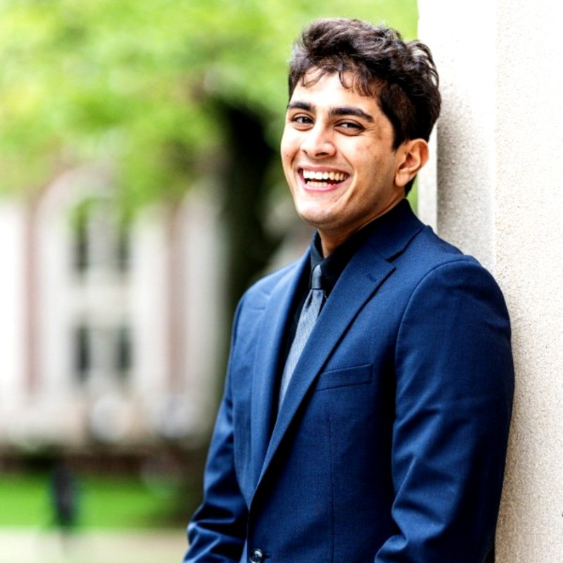

Background & Experience
Materials Science & Engineering · Computer Science · Product & Commercialization

Education
University of Pennsylvania
2025 to August 2026 (expected)
Fall 2025: Structure & Function of Biological Materials, Nanoscale Science & Engineering, Electrochemical Engineering of Materials, Introduction to Polymers.
Spring 2026: Nanofabrication & Nanocharacterization (hands-on cleanroom work: optical/e-beam lithography, PVD, etching, directed self-assembly, quantum dot characterization, graphene devices); Commercialization of Academic Science (Wharton/Mack Institute, covering customer discovery, go-to-market strategy, and competitive analysis for early-stage Penn research); Engineering Product Management (product life-cycle strategy, design thinking, agile methods, portfolio metrics); Nanotribology; Machine Learning & Its Applications in Materials Science.
Columbia University
2021 to May 2025
Dean's List all eligible semesters (16+ credits). Bonomi Scholar (Summer 2022). Principled Action Leadership & Engagement Award.
Relevant coursework: Data Structures in Java, Advanced Programming, Discrete Mathematics, Introduction to Databases, User Interface Design, Foundations of MSE, Ceramics & Composites, Crystallography, Electronic & Magnetic Properties of Solids, Kinetics of Transformations, Interfacial Engineering, Carbon Capture, Energy & Energy Conservation.
Professional Experience
August
December 2025 to present • Remote
- Comb through user and AI assistant interaction logs to find bugs, then write up what I find so the engineering team can act on it.
- Advise on what to build next and how, sitting between what users actually need and what the code can do.
- Train teammates across functions so the product ships faster and everyone works the same way.
Northrop Grumman Mission Systems
June 2024 to August 2024 • Linthicum, MD
- Built a Python app with a simple interface that took in bulk transistor data across file types and turned raw measurements into I–V curves, capacitance, conductance, and power parameters.
- Ported a virtual-source transistor model into Python, checked it against measured data, and added carrier freeze-out corrections so it held up at cryogenic temperatures.
- Benchmarked transistors from several manufacturers on lab test equipment and reported the process-control findings back to the team.
Columbia University Undergraduate Student Life
May 2023 to September 2023 • New York, NY
- Built and ran the full orientation schedule for Columbia's incoming class, and trained hundreds of Orientation Leaders and Crew Captains.
- Worked with senior administration on Columbia-specific programming and was the main outside contact for community-building events.
Research Experience
Columbia MSE, Senior Design Project
October 2024 to May 2025 • New York, NY
- Used qNMR and DSC to map phase diagrams of organic liquid electrolytes, and built electrochemical cells from scratch for research into lighter, higher-energy-density batteries.
- Trained a KNN machine learning model to predict electrolyte phase diagrams from the experimental data we collected.
Gang Lab, Columbia Chemical Engineering & Brookhaven National Lab
February 2022 to May 2024 • New York, NY & Brookhaven, NY
- Worked out a new way to metallize DNA crystal lattices by infiltrating them with iron oxide, then synthesized the crystals and measured their mechanical properties with nanoindentation.
- Used SEM, TEM, FIB, optical microscopy, XRD, and EDX to characterize structure and composition.
- Wrote algorithms that pulled elastic modulus and hardness out of raw nanoindentation data.
National Energy Technology Lab, DOE Mickey Leland Fellowship
June 2023 to August 2023 • Albany, OR (virtual & on-site)
- Wrote a Python program that processed TEM micrographs, using 3D matrix math to compute crystal grain misorientation angles and axes, then packaged it as a Tkinter executable.
- Presented the work at a U.S. Department of Energy Symposium in Washington, D.C.
Garcia Research Program, SUNY Stony Brook University
July 2019 to March 2021 • Stony Brook, NY
- Developed a biodegradable PVA-based flame-retardant hydrogel, and modeled the carbon-capture properties of a UiO-66 MOF with the Lattice Boltzmann method.
- Published the hydrogel work in ACS Biomacromolecules (2021) and presented at the Fall 2019 MRS Conference in Boston.
Activities & Leadership
Columbia University Senate & Engineering Student Council
October 2023 to May 2025 • New York, NY
- Represented engineering undergraduates in Columbia's main shared-governance body, and sat on the Student Affairs, Rules of University Conduct, and Structures & Operations committees.
- Worked with administration, faculty, and peer councils to move student-facing proposals forward and run community programming.
- Received the Principled Action Leadership and Engagement Award.
Skills
Programming & Tools
Characterization & Fabrication
Product & Business
Publications & Presentations
- Mehta et al., “Synthesis of an Effective Flame-Retardant Hydrogel for Skin Protection Using Xanthan Gum and RDP-Coated Starch,” ACS Biomacromolecules, 2021.
- Presenter, Fall 2019 Materials Research Society Conference, Boston: Flame Retardancy of Biodegradable PVA Hydrogels.
- Presenter, U.S. Department of Energy Symposium, Washington, D.C., 2023: TEM Image Processing for Crystal Grain Analysis.
Honors & Languages
- Columbia University Bonomi Scholar (Summer 2022)
- Columbia SEAS Dean's List (all eligible semesters)
- Mickey Leland Energy Fellow (2023)
- Principled Action Leadership and Engagement Award
Languages: English (native), Gujarati (native), Spanish (conversational)